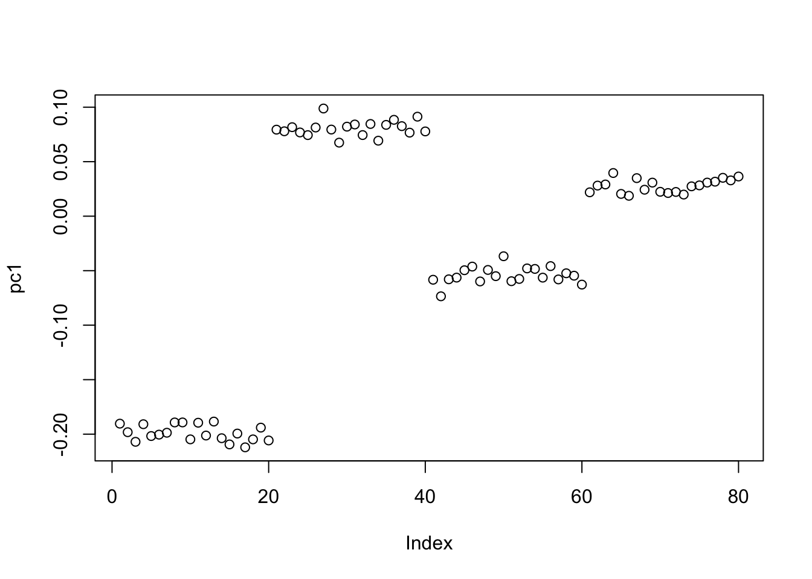
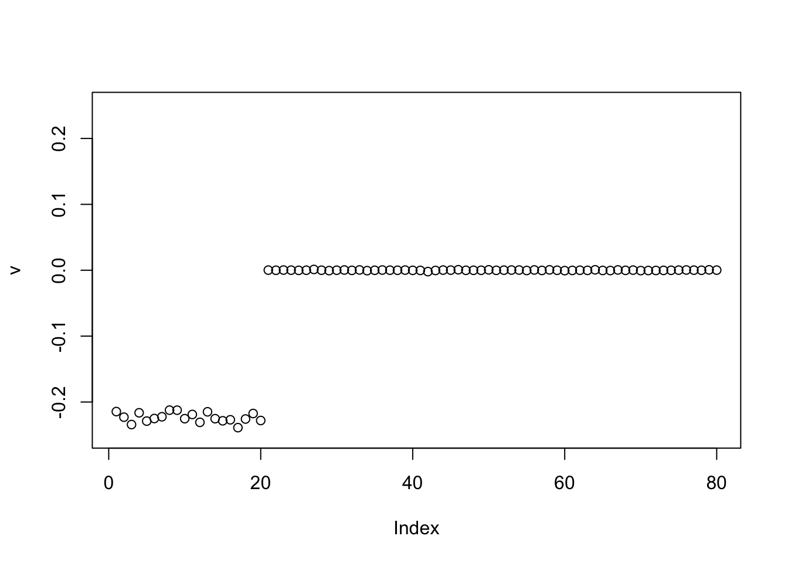
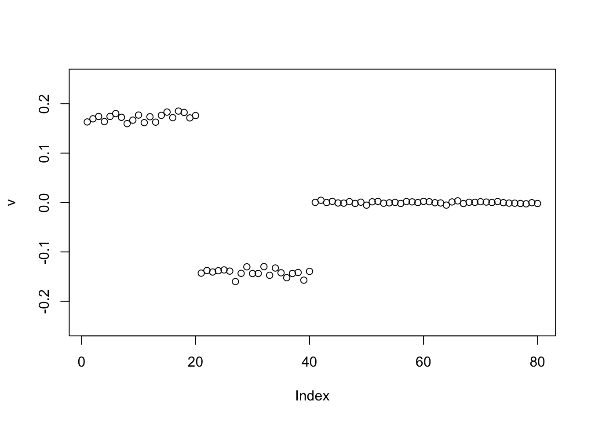
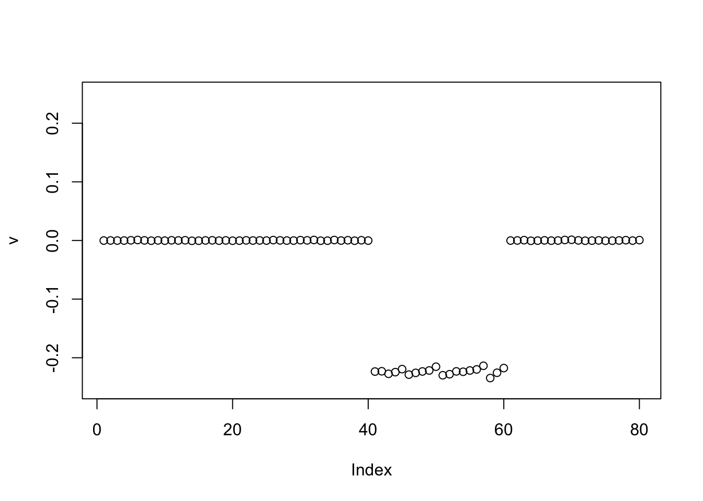
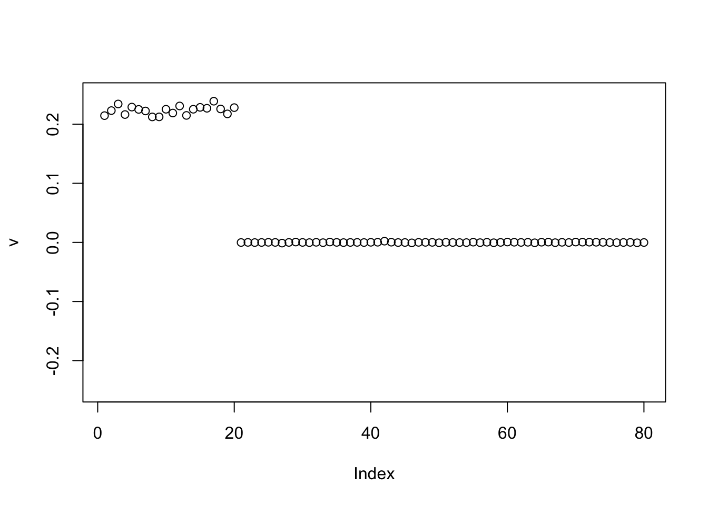

ebpower
Matthew Stephens
2025-03-09
Last updated: 2025-03-12
Checks: 7 0
Knit directory: misc/analysis/
This reproducible R Markdown analysis was created with workflowr (version 1.7.1). The Checks tab describes the reproducibility checks that were applied when the results were created. The Past versions tab lists the development history.
Great! Since the R Markdown file has been committed to the Git repository, you know the exact version of the code that produced these results.
Great job! The global environment was empty. Objects defined in the global environment can affect the analysis in your R Markdown file in unknown ways. For reproduciblity it’s best to always run the code in an empty environment.
The command set.seed(1) was run prior to running the
code in the R Markdown file. Setting a seed ensures that any results
that rely on randomness, e.g. subsampling or permutations, are
reproducible.
Great job! Recording the operating system, R version, and package versions is critical for reproducibility.
Nice! There were no cached chunks for this analysis, so you can be confident that you successfully produced the results during this run.
Great job! Using relative paths to the files within your workflowr project makes it easier to run your code on other machines.
Great! You are using Git for version control. Tracking code development and connecting the code version to the results is critical for reproducibility.
The results in this page were generated with repository version 6aa4dfe. See the Past versions tab to see a history of the changes made to the R Markdown and HTML files.
Note that you need to be careful to ensure that all relevant files for
the analysis have been committed to Git prior to generating the results
(you can use wflow_publish or
wflow_git_commit). workflowr only checks the R Markdown
file, but you know if there are other scripts or data files that it
depends on. Below is the status of the Git repository when the results
were generated:
Ignored files:
Ignored: .DS_Store
Ignored: .Rhistory
Ignored: .Rproj.user/
Ignored: analysis/.RData
Ignored: analysis/.Rhistory
Ignored: analysis/ALStruct_cache/
Ignored: data/.Rhistory
Ignored: data/methylation-data-for-matthew.rds
Ignored: data/pbmc/
Ignored: data/pbmc_purified.RData
Untracked files:
Untracked: .dropbox
Untracked: Icon
Untracked: analysis/GHstan.Rmd
Untracked: analysis/GTEX-cogaps.Rmd
Untracked: analysis/PACS.Rmd
Untracked: analysis/Rplot.png
Untracked: analysis/SPCAvRP.rmd
Untracked: analysis/abf_comparisons.Rmd
Untracked: analysis/admm_02.Rmd
Untracked: analysis/admm_03.Rmd
Untracked: analysis/bispca.Rmd
Untracked: analysis/cache/
Untracked: analysis/cholesky.Rmd
Untracked: analysis/compare-transformed-models.Rmd
Untracked: analysis/cormotif.Rmd
Untracked: analysis/cp_ash.Rmd
Untracked: analysis/eQTL.perm.rand.pdf
Untracked: analysis/eb_prepilot.Rmd
Untracked: analysis/eb_var.Rmd
Untracked: analysis/ebpmf1.Rmd
Untracked: analysis/ebpmf_sla_text.Rmd
Untracked: analysis/ebspca_sims.Rmd
Untracked: analysis/explore_psvd.Rmd
Untracked: analysis/fa_check_identify.Rmd
Untracked: analysis/fa_iterative.Rmd
Untracked: analysis/flash_cov_overlapping_groups_init.Rmd
Untracked: analysis/flash_test_tree.Rmd
Untracked: analysis/flashier_newgroups.Rmd
Untracked: analysis/flashier_nmf_triples.Rmd
Untracked: analysis/flashier_pbmc.Rmd
Untracked: analysis/flashier_snn_shifted_prior.Rmd
Untracked: analysis/greedy_ebpmf_exploration_00.Rmd
Untracked: analysis/ieQTL.perm.rand.pdf
Untracked: analysis/lasso_em_03.Rmd
Untracked: analysis/m6amash.Rmd
Untracked: analysis/mash_bhat_z.Rmd
Untracked: analysis/mash_ieqtl_permutations.Rmd
Untracked: analysis/methylation_example.Rmd
Untracked: analysis/mixsqp.Rmd
Untracked: analysis/mr.ash_lasso_init.Rmd
Untracked: analysis/mr.mash.test.Rmd
Untracked: analysis/mr_ash_modular.Rmd
Untracked: analysis/mr_ash_parameterization.Rmd
Untracked: analysis/mr_ash_ridge.Rmd
Untracked: analysis/mv_gaussian_message_passing.Rmd
Untracked: analysis/nejm.Rmd
Untracked: analysis/nmf_bg.Rmd
Untracked: analysis/nonneg_underapprox.Rmd
Untracked: analysis/normal_conditional_on_r2.Rmd
Untracked: analysis/normalize.Rmd
Untracked: analysis/pbmc.Rmd
Untracked: analysis/pca_binary_weighted.Rmd
Untracked: analysis/pca_l1.Rmd
Untracked: analysis/poisson_nmf_approx.Rmd
Untracked: analysis/poisson_shrink.Rmd
Untracked: analysis/poisson_transform.Rmd
Untracked: analysis/qrnotes.txt
Untracked: analysis/ridge_iterative_02.Rmd
Untracked: analysis/ridge_iterative_splitting.Rmd
Untracked: analysis/samps/
Untracked: analysis/sc_bimodal.Rmd
Untracked: analysis/shrinkage_comparisons_changepoints.Rmd
Untracked: analysis/susie_cov.Rmd
Untracked: analysis/susie_en.Rmd
Untracked: analysis/susie_z_investigate.Rmd
Untracked: analysis/svd-timing.Rmd
Untracked: analysis/temp.RDS
Untracked: analysis/temp.Rmd
Untracked: analysis/test-figure/
Untracked: analysis/test.Rmd
Untracked: analysis/test.Rpres
Untracked: analysis/test.md
Untracked: analysis/test_qr.R
Untracked: analysis/test_sparse.Rmd
Untracked: analysis/tree_dist_top_eigenvector.Rmd
Untracked: analysis/z.txt
Untracked: code/multivariate_testfuncs.R
Untracked: code/rqb.hacked.R
Untracked: data/4matthew/
Untracked: data/4matthew2/
Untracked: data/E-MTAB-2805.processed.1/
Untracked: data/ENSG00000156738.Sim_Y2.RDS
Untracked: data/GDS5363_full.soft.gz
Untracked: data/GSE41265_allGenesTPM.txt
Untracked: data/Muscle_Skeletal.ACTN3.pm1Mb.RDS
Untracked: data/P.rds
Untracked: data/Thyroid.FMO2.pm1Mb.RDS
Untracked: data/bmass.HaemgenRBC2016.MAF01.Vs2.MergedDataSources.200kRanSubset.ChrBPMAFMarkerZScores.vs1.txt.gz
Untracked: data/bmass.HaemgenRBC2016.Vs2.NewSNPs.ZScores.hclust.vs1.txt
Untracked: data/bmass.HaemgenRBC2016.Vs2.PreviousSNPs.ZScores.hclust.vs1.txt
Untracked: data/eb_prepilot/
Untracked: data/finemap_data/fmo2.sim/b.txt
Untracked: data/finemap_data/fmo2.sim/dap_out.txt
Untracked: data/finemap_data/fmo2.sim/dap_out2.txt
Untracked: data/finemap_data/fmo2.sim/dap_out2_snp.txt
Untracked: data/finemap_data/fmo2.sim/dap_out_snp.txt
Untracked: data/finemap_data/fmo2.sim/data
Untracked: data/finemap_data/fmo2.sim/fmo2.sim.config
Untracked: data/finemap_data/fmo2.sim/fmo2.sim.k
Untracked: data/finemap_data/fmo2.sim/fmo2.sim.k4.config
Untracked: data/finemap_data/fmo2.sim/fmo2.sim.k4.snp
Untracked: data/finemap_data/fmo2.sim/fmo2.sim.ld
Untracked: data/finemap_data/fmo2.sim/fmo2.sim.snp
Untracked: data/finemap_data/fmo2.sim/fmo2.sim.z
Untracked: data/finemap_data/fmo2.sim/pos.txt
Untracked: data/logm.csv
Untracked: data/m.cd.RDS
Untracked: data/m.cdu.old.RDS
Untracked: data/m.new.cd.RDS
Untracked: data/m.old.cd.RDS
Untracked: data/mainbib.bib.old
Untracked: data/mat.csv
Untracked: data/mat.txt
Untracked: data/mat_new.csv
Untracked: data/matrix_lik.rds
Untracked: data/paintor_data/
Untracked: data/running_data_chris.csv
Untracked: data/running_data_matthew.csv
Untracked: data/temp.txt
Untracked: data/y.txt
Untracked: data/y_f.txt
Untracked: data/zscore_jointLCLs_m6AQTLs_susie_eQTLpruned.rds
Untracked: data/zscore_jointLCLs_random.rds
Untracked: explore_udi.R
Untracked: output/fit.k10.rds
Untracked: output/fit.nn.pbmc.purified.rds
Untracked: output/fit.nn.rds
Untracked: output/fit.nn.s.001.rds
Untracked: output/fit.nn.s.01.rds
Untracked: output/fit.nn.s.1.rds
Untracked: output/fit.nn.s.10.rds
Untracked: output/fit.snn.s.001.rds
Untracked: output/fit.snn.s.01.nninit.rds
Untracked: output/fit.snn.s.01.rds
Untracked: output/fit.varbvs.RDS
Untracked: output/fit2.nn.pbmc.purified.rds
Untracked: output/glmnet.fit.RDS
Untracked: output/snn07.txt
Untracked: output/snn34.txt
Untracked: output/test.bv.txt
Untracked: output/test.gamma.txt
Untracked: output/test.hyp.txt
Untracked: output/test.log.txt
Untracked: output/test.param.txt
Untracked: output/test2.bv.txt
Untracked: output/test2.gamma.txt
Untracked: output/test2.hyp.txt
Untracked: output/test2.log.txt
Untracked: output/test2.param.txt
Untracked: output/test3.bv.txt
Untracked: output/test3.gamma.txt
Untracked: output/test3.hyp.txt
Untracked: output/test3.log.txt
Untracked: output/test3.param.txt
Untracked: output/test4.bv.txt
Untracked: output/test4.gamma.txt
Untracked: output/test4.hyp.txt
Untracked: output/test4.log.txt
Untracked: output/test4.param.txt
Untracked: output/test5.bv.txt
Untracked: output/test5.gamma.txt
Untracked: output/test5.hyp.txt
Untracked: output/test5.log.txt
Untracked: output/test5.param.txt
Unstaged changes:
Modified: .gitignore
Modified: analysis/flashier_log1p.Rmd
Modified: analysis/flashier_sla_text.Rmd
Modified: analysis/logistic_z_scores.Rmd
Modified: analysis/mr_ash_pen.Rmd
Modified: analysis/nmu_em.Rmd
Modified: analysis/susie_flash.Rmd
Modified: misc.Rproj
Note that any generated files, e.g. HTML, png, CSS, etc., are not included in this status report because it is ok for generated content to have uncommitted changes.
These are the previous versions of the repository in which changes were
made to the R Markdown (analysis/ebpower.Rmd) and HTML
(docs/ebpower.html) files. If you’ve configured a remote
Git repository (see ?wflow_git_remote), click on the
hyperlinks in the table below to view the files as they were in that
past version.
| File | Version | Author | Date | Message |
|---|---|---|---|---|
| Rmd | 6aa4dfe | Matthew Stephens | 2025-03-12 | workflowr::wflow_publish("analysis/ebpower.Rmd") |
library("ebnm")Introduction
I want to implement an EB version of the power update for a symmetric data matrix S. I haven’t implemented an update to the residual error yet
# model is S \sim VDV' + E with eb prior on V
eb_power_update = function(S,v,d,ebnm_fn){
K = ncol(v)
sigma2=mean((S-v %*% diag(d,nrow=length(d)) %*% t(v))^2)
for(k in 1:K){
U = v[,-k,drop=FALSE]
D = diag(d[-k],nrow=length(d[-k]))
newv = (S %*% v[,k,drop=FALSE] - U %*% D %*% t(U) %*% v[,k,drop=FALSE] )
if(!all(newv==0)){
fit.ebnm = ebnm_fn(newv,sigma2)
newv = fit.ebnm$posterior$mean
if(!all(newv==0)){
newv = newv/sqrt(sum(newv^2 + fit.ebnm$posterior$sd^2))
}
}
v[,k] = newv
d[k] = t(v[,k]) %*% S %*% v[,k] - t(v[,k]) %*% U %*% D %*% t(U) %*% v[,k]
}
return(list(v=v,d=d))
}
#helper function
compute_sqerr = function(S,fit){
sum((S-fit$v %*% diag(fit$d,nrow=length(fit$d)) %*% t(fit$v))^2)
}
# a random initialization
random_init = function(S,K){
n = nrow(S)
v = matrix(nrow=n,ncol=K)
for(k in 1:K){
v[,k] = pmax(cbind(rnorm(n)),0) # initialize v
v[,k] = v[,k]/sum(v[,k]^2)
}
d = rep(1e-8,K)
return(list(v=v,d=d))
}Tree structured data
Simulate some data from a tree structure.
set.seed(1)
n = 40
x = cbind(c(rep(1,n),rep(0,n)), c(rep(0,n),rep(1,n)), c(rep(1,n/2),rep(0,3*n/2)), c(rep(0,n/2), rep(1,n/2), rep(0,n)), c(rep(0,n),rep(1,n/2),rep(0,n/2)), c(rep(0,3*n/2),rep(1,n/2)))
E = matrix(0.1*rexp(2*n*2*n),nrow=2*n)
E = E+t(E) #symmetric errors
A = x %*% t(x) + E
image(A)
Rank 1 fit
Here I fit a single factor with point exponential prior. It finds the solution where everything is approximately equal.This is also the leading eigenvector of A.
set.seed(1)
fit = random_init(A,1)
err = rep(0,10)
err[1] = compute_sqerr(A,fit)
for(i in 2:100){
fit = eb_power_update(A,fit$v,fit$d,ebnm_point_exponential)
err[i] = compute_sqerr(A,fit)
}
plot(err)
plot(fit$v[,1],svd(A)$v[,1])
plot(fit$v)
Interestingly the point-Laplace prior zeros everything out. This indicates the need to be a bit careful about initialization (maybe particularly for sigma2).
set.seed(1)
fit = random_init(A,1)
err = rep(0,10)
err[1] = compute_sqerr(A,fit)
for(i in 2:100){
fit = eb_power_update(A,fit$v,fit$d,ebnm_point_laplace)
err[i] = compute_sqerr(A,fit)
}
plot(fit$v[,1],svd(A)$v[,1])
plot(fit$v)
Run multiple factors
Here I run with \(K=9\). It finds a rank 4 solution, zeroing out the other 5. One can compare this with non-negative without the EB approach here.
set.seed(2)
fit = random_init(A,9)
err = rep(0,10)
err[1] = sum((A-fit$v %*% diag(fit$d) %*% t(fit$v))^2)
for(i in 2:100){
fit = eb_power_update(A,fit$v,fit$d,ebnm_point_exponential)
err[i] = sum((A-fit$v %*% diag(fit$d) %*% t(fit$v))^2)
}
plot(err)
par(mfcol=c(3,3),mai=rep(0.3,4))
for(i in 1:9){plot(fit$v[,i],main=paste0(fit$d[i]))}
Here I try the generalized binary prior. So far I’m finding this does not work well, especially if started from random starting point. I debugged and found that what happens is that initially all the v are quite non-negative, bounded away from 0. So the gb prior puts all its weight on the non-null normal component and does not shrink anything. (Is it worth using a laplace for the non-null component?) The point exponential does not have that problem - it shrinks the smallest values towards 0, and eventually gets to a point where everything is 0.
set.seed(2)
fit = random_init(A,9)
err = rep(0,10)
err[1] = sum((A-fit$v %*% diag(fit$d) %*% t(fit$v))^2)
for(i in 2:10){
fit = eb_power_update(A,fit$v,fit$d,ebnm_generalized_binary)
err[i] = sum((A-fit$v %*% diag(fit$d) %*% t(fit$v))^2)
}
plot(err)
par(mfcol=c(3,3),mai=rep(0.3,4))
for(i in 1:9){plot(fit$v[,i],main=paste0(fit$d[i]))}
I should try with a fixed GB prior? I want to force the shrinkage towards 0… Here we try initializing GB with point-exponential.
set.seed(2)
fit = random_init(A,9)
err = rep(0,10)
err[1] = compute_sqerr(A,fit)
for(i in 2:50){
fit = eb_power_update(A,fit$v,fit$d,ebnm_point_exponential)
err[i] = compute_sqerr(A,fit)
}
par(mfcol=c(3,3),mai=rep(0.3,4))
for(i in 1:9){plot(fit$v[,i],main=paste0(fit$d[i]))}
err [1] 10358.0063 4607.3557 4598.9735 4537.0254 3410.6696 1191.1974
[7] 959.9479 811.3587 682.0467 581.9783 500.5249 371.6257
[13] 196.7067 127.1278 120.6584 119.9063 119.6007 119.4296
[19] 119.3242 119.2502 119.1947 119.1548 119.1264 119.1049
[25] 119.0875 119.0733 119.0618 119.0524 119.0446 119.0379
[31] 119.0322 119.0272 119.0227 119.0185 119.0144 119.0105
[37] 119.0068 119.0034 119.0003 118.9974 118.9947 118.9923
[43] 118.9902 118.9883 118.9866 118.9851 118.9838 118.9825
[49] 118.9814 118.9803fit$d = rep(1e-8,9)
for(i in 2:50){
fit = eb_power_update(A,fit$v,fit$d,ebnm_generalized_binary)
err[i] = compute_sqerr(A,fit)
}
par(mfcol=c(3,3),mai=rep(0.3,4))
for(i in 1:9){plot(fit$v[,i],main=paste0(fit$d[i]))}
err [1] 10358.0063 997.5409 864.8641 744.9060 633.3875 567.5381
[7] 534.0768 506.6033 438.9509 294.1267 201.6841 150.2595
[13] 129.7993 124.1713 122.6030 121.8072 121.4878 121.3150
[19] 121.1241 121.0973 121.0897 121.0870 121.0856 121.0848
[25] 121.0843 121.0839 121.0836 121.0834 121.0832 121.0831
[31] 121.0830 121.0830 121.0829 121.0829 121.0829 121.0828
[37] 121.0828 121.0828 121.0828 121.0828 121.0828 121.0828
[43] 121.0828 121.0828 121.0828 121.0828 121.0828 121.0828
[49] 121.0828 121.0828sum(E^2) # compare with "true" error[1] 388.104SVD initialization
I’m going to try initializing with SVD, then running point-laplace, then running GB (similar to GBCD strategy). Interestingly, initializing at SVD with d set to the svd-based value leads point-laplace to a solution with negative d values (not shown) so here I initialize d to be very small and let it learn the non-zero values more gradually.
set.seed(2)
A.svd = svd(A)
fit = list(v=A.svd$u[,1:4],d=rep(1e-8,4)) #init d to be very small
err = rep(0,10)
err[1] = compute_sqerr(A,fit)
for(i in 2:100){
fit = eb_power_update(A,fit$v,fit$d,ebnm_point_laplace)
err[i] = compute_sqerr(A,fit)
}
par(mfcol=c(3,3),mai=rep(0.3,4))
for(i in 1:4){plot(fit$v[,i],main=paste0(fit$d[i]))}
err [1] 10358.0063 736.7750 120.5348 118.9666 118.9591 118.9599
[7] 118.9606 118.9609 118.9607 118.9601 118.9596 118.9593
[13] 118.9590 118.9589 118.9588 118.9587 118.9586 118.9586
[19] 118.9586 118.9587 118.9588 118.9590 118.9592 118.9593
[25] 118.9595 118.9597 118.9598 118.9600 118.9601 118.9602
[31] 118.9603 118.9604 118.9605 118.9605 118.9606 118.9606
[37] 118.9607 118.9607 118.9608 118.9608 118.9608 118.9608
[43] 118.9609 118.9609 118.9609 118.9609 118.9609 118.9609
[49] 118.9610 118.9610 118.9610 118.9610 118.9610 118.9610
[55] 118.9610 118.9610 118.9610 118.9610 118.9610 118.9611
[61] 118.9611 118.9611 118.9611 118.9611 118.9611 118.9611
[67] 118.9611 118.9611 118.9611 118.9611 118.9611 118.9611
[73] 118.9611 118.9611 118.9611 118.9611 118.9611 118.9611
[79] 118.9611 118.9611 118.9611 118.9611 118.9611 118.9611
[85] 118.9611 118.9611 118.9611 118.9611 118.9611 118.9611
[91] 118.9611 118.9611 118.9611 118.9611 118.9611 118.9612
[97] 118.9612 118.9612 118.9612 118.9612split_v = function(v){
v = cbind(pmax(v,0),pmax(-v,0))
}
fit$v = split_v(fit$v)
fit$d= rep(fit$d/2,2)
for(i in 2:100){
fit = eb_power_update(A,fit$v,fit$d,ebnm_point_exponential)
err[i] = compute_sqerr(A,fit)
}
for(i in 2:50){
fit = eb_power_update(A,fit$v,fit$d,ebnm_generalized_binary)
err[i] = compute_sqerr(A,fit)
}
par(mfcol=c(3,3),mai=rep(0.3,4))
for(i in 1:4){plot(fit$v[,i],main=paste0(fit$d[i]))}
err [1] 10358.0063 108.6040 108.5842 108.5771 108.6587 108.7029
[7] 108.6780 108.7333 108.8173 108.7955 108.8543 108.8530
[13] 108.8317 108.8515 108.8325 108.8746 108.8902 108.8967
[19] 108.8792 108.8969 108.8839 108.8752 108.8795 108.9067
[25] 108.9010 108.8965 108.8927 108.8894 108.8865 108.8841
[31] 108.8819 108.8801 108.8785 108.8772 108.8761 108.8751
[37] 108.8743 108.8736 108.8731 108.8726 108.8722 108.8719
[43] 108.8717 108.8715 108.8714 108.8713 108.8712 108.8712
[49] 108.8712 108.8712 109.8584 109.7571 109.6662 109.5818
[55] 109.5042 109.4326 109.3657 109.3023 109.2416 109.1830
[61] 109.1271 109.0745 109.0247 108.9786 108.9351 108.8937
[67] 108.8547 108.8164 108.7790 108.7436 108.7096 108.6770
[73] 108.6449 108.6124 108.5800 108.5484 108.5179 108.4888
[79] 108.4612 108.4348 108.4094 108.3848 108.3607 108.3368
[85] 108.3133 108.2901 108.2669 108.2428 108.2191 108.1958
[91] 108.1730 108.1506 108.1284 108.1068 108.0863 108.0665
[97] 108.0473 108.0286 108.0101 107.9917sum(E^2) # co[1] 388.104
sessionInfo()R version 4.4.2 (2024-10-31)
Platform: aarch64-apple-darwin20
Running under: macOS Sequoia 15.3.1
Matrix products: default
BLAS: /Library/Frameworks/R.framework/Versions/4.4-arm64/Resources/lib/libRblas.0.dylib
LAPACK: /Library/Frameworks/R.framework/Versions/4.4-arm64/Resources/lib/libRlapack.dylib; LAPACK version 3.12.0
locale:
[1] en_US.UTF-8/en_US.UTF-8/en_US.UTF-8/C/en_US.UTF-8/en_US.UTF-8
time zone: America/Chicago
tzcode source: internal
attached base packages:
[1] stats graphics grDevices utils datasets methods base
other attached packages:
[1] ebnm_1.1-2
loaded via a namespace (and not attached):
[1] sass_0.4.9 generics_0.1.3 ashr_2.2-63 stringi_1.8.4
[5] lattice_0.22-6 digest_0.6.37 magrittr_2.0.3 evaluate_1.0.3
[9] grid_4.4.2 fastmap_1.2.0 rprojroot_2.0.4 workflowr_1.7.1
[13] jsonlite_1.8.9 Matrix_1.7-2 whisker_0.4.1 mixsqp_0.3-54
[17] promises_1.3.2 scales_1.3.0 truncnorm_1.0-9 invgamma_1.1
[21] jquerylib_0.1.4 cli_3.6.3 rlang_1.1.5 deconvolveR_1.2-1
[25] munsell_0.5.1 splines_4.4.2 cachem_1.1.0 yaml_2.3.10
[29] tools_4.4.2 SQUAREM_2021.1 dplyr_1.1.4 colorspace_2.1-1
[33] ggplot2_3.5.1 httpuv_1.6.15 vctrs_0.6.5 R6_2.5.1
[37] lifecycle_1.0.4 git2r_0.35.0 stringr_1.5.1 fs_1.6.5
[41] trust_0.1-8 irlba_2.3.5.1 pkgconfig_2.0.3 pillar_1.10.1
[45] bslib_0.9.0 later_1.4.1 gtable_0.3.6 glue_1.8.0
[49] Rcpp_1.0.14 xfun_0.50 tibble_3.2.1 tidyselect_1.2.1
[53] rstudioapi_0.17.1 knitr_1.49 htmltools_0.5.8.1 rmarkdown_2.29
[57] compiler_4.4.2 horseshoe_0.2.0